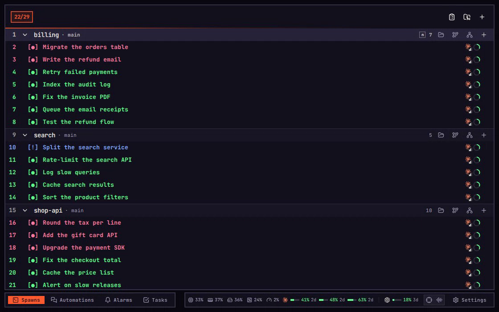
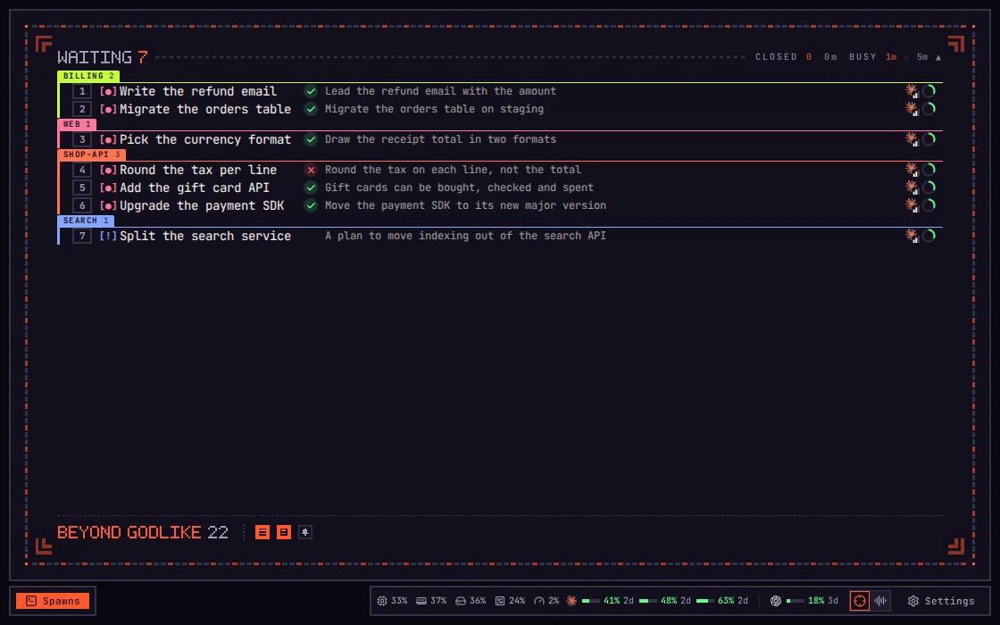
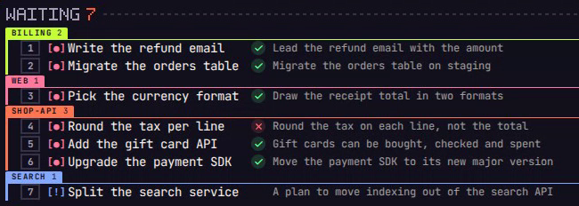

Ultrafocus
A higher level of focus, with just enough information.
imba runs many coding agents at once, one spawn each. A spawn that stops to wait for you does no work until you answer it. With thirty at work your mind slips in known ways, and each part of Ultrafocus guards against one of them.
On a phone, each key on this page is a tap.
01Waiting
The trap
“I'll answer the one that just pinged.”
Salience bias. The loudest thing on screen gets your attention, not the one that matters.
Only what waits on you.
Ctrl+U, or the crosshair on the bar, clears away the 22 spawns at work, and Automations, Alarms and Tasks with them. The 7 waiting on you stay, each with the number that opens it.
Ctrl+U Ultrafocus
7 waiting22 at work


02One line
The trap
“Seven replies. I'll skim them.”
Information overload. Faced with too much, you skim, and a skim ends in a yes.
Just enough on a row.
On a laptop each row carries one sentence: what its last turn set out to do, ticked if it got there and crossed if not. A phone keeps the name alone.
7 waiting22 at work

03Proof
The trap
“It said it's done.”
Automation bias. A confident machine's word gets trusted over your own eyes.
The proof, not the essay.
With a reply set to Pictures, films and cards in Settings, 1 opens the refund email on its two pictures. t, or Full reply on a phone, brings its three paragraphs back, and w sends it back to work.
1–9 Opent The wordsw Done
6 waiting23 at work
04Next
The trap
“Which one should I take next?”
Decision fatigue. Every choice of what comes next spends a little judgement, and by the tenth you choose badly.
Press 1, answer, back.
The rows stand in the order they started waiting, a repository at a time, so there is nothing to pick. 1 opens the top one, w sends it back to work, q comes back, and the next one is 1. The count at the foot climbs with each.
1 Openw Doneq Back
4 waiting25 at work
05Arrivals
The trap
“The newest one must be the most urgent.”
Recency bias. What happened last feels more pressing than what has waited longest.
New work joins the line.
When a spawn at work finishes its turn, its row joins its repository's group behind the ones that waited longer. A lap of light round the frame says so, and the count at work drops by one.
5 waiting24 at work
06Empty
The trap
“All of them are working. I'll start the next one later.”
Present bias. A small effort now outweighs a bigger payoff later, so the next start keeps slipping.
Nothing waiting. Start the next.
Later the last one goes back to work. Waiting closes and New takes the frame: each repository and the tasks queued for it, a number each. A number opens the start of the next spawn.
1–9 Start
0 waiting29 at work
That spawn works until its turn ends, then waits in Ultrafocus with a number. The round starts again.
Six traps
Your mind slips. Ultrafocus catches it.
- 01 Waiting
“I'll answer the one that just pinged.”Salience biasOnly what waits on youCtrl+U - 02 One line
“Seven replies. I'll skim them.”Information overloadOne sentence a row - 03 Proof
“It said it's done.”Automation biasThe pictures firstt - 04 Next
“Which one should I take next?”Decision fatigueNo choosing, 1 is next1 w q - 05 Arrivals
“The newest one must be the most urgent.”Recency biasIt joins the line - 06 Empty
“I'll start the next one later.”Present biasNew, a number each1–9
At the foot of the frame sit the other views, the machine's tools and the bell, a key each.
Recorded in imba. Every spawn, repository and person in these films is made up.